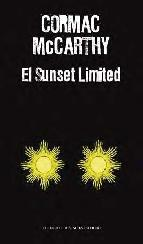

El Sunset Limited de Cormac McCarthy
Tue, 14 Feb 2012 06:00:49 +0000
Título: El Sunset Limited Autor: Cormac McCarthy País: Estados Unidos Año de publicación: 2012 ISBN: 9788439725022 Llega a las librerías una nueva novela del escritor norteamericano Cormac McCarthy, autor de la aclamada La carretera. El Sunset Limited es una historia acerca del vacío que se abre entre el silencio de Dios y lo inevitable de [...]
Título: El Sunset Limited
Autor: Cormac McCarthy
País: Estados Unidos
Año de publicación: 2012
ISBN: 9788439725022

Llega a las librerías una nueva novela del escritor norteamericano Cormac McCarthy, autor de la aclamada La carretera.
El Sunset Limited es una historia acerca del vacío que se abre entre el silencio de Dios y lo inevitable de la muerte. Dos hombres discuten en una habitación cerrada. El hombre blanco es un profesor de humanidades que ha llevado una vida cómoda, pero que oprimido por sus dudas acerca de la condición humana, piensa que la única salida a la mísera situación en la que se halla el ser humano es lanzarse a las vías del Sunset Limited. Su experiencia le ha hecho creer que experimentar felicidad es nocivo para la condición humana. En el polo opuesto se encuentra el hombre negro, cuya vida ha estado marcada por la violencia, la adicción a las drogas y la cárcel, pero que pese a todo conserva su fe. Ambos contrincantes se ven enlazados en un debate filosófico dialéctico, donde cada uno defiende apasionadamente sus creencias personales y procuran convertir al otro para que abandone su visión fundamentalmente opuesta.
Cormac McCarthy nació en Rhode Island en 1933. Es poco lo que se sabe con seguridad de su vida. No concede entrevistas y eso hace que su figura sea envuelta por un halo de leyenda. Se dice de él que vivió bajo una torre de perforación petrolífera y que en su juventud vivió como vagabundo. Con la publicación en 1992 de Todos los hermosos caballos, ganadora del National Book Award, se convirtió en uno de los autores contemporáneos más reconocidos de la narrativa de los Estados Unidos. No ha dejado de crecer tanto en el éxito con el público como ante la crítica. Con la novela La carretera obtuvo el premio Pulitzer 2007.
Jonathan Strange y el señor Norrell de Susanna Clarke
Sun, 12 Feb 2012 06:00:39 +0000
Título: Jonathan Strange y el señor Norrell Autor: Susanna Clarke País: Inglaterra Año de publicación: 2004 Idioma original: Inglés Título original: Jonathan Strange & Mr. Norrell Páginas: 800 ISBN: 8478889736 Web: Sitio oficial de la autora (en inglés). Con Jonathan Strange y el señor Norrell, la primera que publica la autora, la escritora británica Susana [...]
Título: Jonathan Strange y el señor Norrell
Autor: Susanna Clarke
País: Inglaterra
Año de publicación: 2004
Idioma original: Inglés
Título original: Jonathan Strange & Mr. Norrell
Páginas: 800
ISBN: 8478889736
Web: Sitio oficial de la autora (en inglés).

Con Jonathan Strange y el señor Norrell, la primera que publica la autora, la escritora británica Susana Clarke obtuvo el prestigioso Premio Hugo a la Mejor Novela 2005. También estuvo nominada para el Premio Booker. Se trata de una extensa novela (la edición de Salamandra alcanza las 800 páginas) que mezcla fantasía, novela histórica, magia y fino e irónico humor inglés.
Este libro es, en primer lugar, una ucronía. Parte de la premisa de que la magia existe, si bien en la práctica ha pasado al olvido. Nos encontramos en una Inglaterra a comienzos del siglo XIX, en guerra contra Napoleón. Muchos siglos han transcurrido desde que desapareciera el Rey Cuervo, el último gran mago inglés. En 1806 la magia inglesa ha sido reducida al estudio teórico de hechizos. Pero aparece el señor Norrell, quien busca traerla de nuevo a la práctica y llevarla a su esplendor… con la condición de que aparte de él mismo, nadie siga estudiando magia en toda Inglaterra. Recopila en su legendaria biblioteca todos los libros de historia de la magia, para que nadie más pueda leerlos. Y se pone al servicio de la corona británica, colaborando con su arte para combatir al imperio napoleónico. La trama se complica al surgir en escena Jonathan Strange, un mago mucho más carismático y con una extraordinaria habilidad, que busca ser discípulo de Norrell. Entre ambos magos nace una amistad marcada por el conflicto y la competitividad.
Jonathan Strange y el señor Norrell es una historia compleja que se desarrolla poco a poco, dueña de un sentido del humor plenamente inglés, cuya sutileza no todos los lectores aprecian. Se destacan las notas al pie que la autora incorpora borgeanamente a lo largo de todo el libro, que recopilan la ficticia historia de la magia inglesa. La traducción es de Ana María de la Fuente y el libro tiene ilustraciones de Portia Rosenberg.
Opinión personal: Si te encanta leer historias de magia y aventuras, pero tienes el prejuicio para con la saga de Harry Potter, Jonathan Strange y el señor Norrell puede pasar a ser uno de tus libros predilectos. A algunos puede resultarles un tanto lento. Pero personalmente, me encantan los libros cuya extensión me permite disfrutarlos por semanas enteras, aún leyendo tan rápido como lo hago.